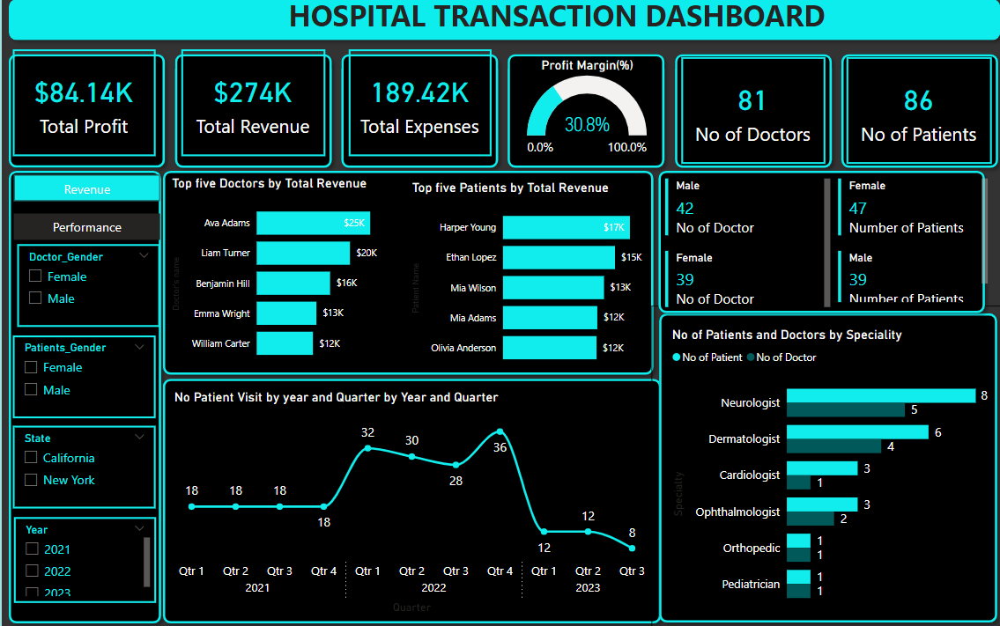

This project was conducted to evaluate how satisfied customers are with the company's product and services.
This analysis revealed valuable insights into customer needs, preferences and pain-points supporting informed decisions to enhance customer experience and increase loyalty.


20 years historical employee data was explored using SQL and visualization was done using Power BI destop.
The analysis highlighted employee distribution by gender, department and rate of turnover by department.

This project provided insights into Stridestyle, a Footwear Manufacturing Company. Stridestyle collaborates with multiple retailers and seeks to assess their performance to optimize resource allocation.
Power Busines Intelligent tool (Power BI) was used to transform, analyse and create the visuals. An interesting twist was discovered through thorough analysis and visualization of the business data.
The data revealed that among the three sales methods (Online, In-store and outlet), Online, was the preferred sales method among the retailers. However, the highest revenue was generated from the In-store sales method.
The recommendations given to StrideStyle based on the insights from analysed data increased her revenue by 15% as it enabled Stridestyle make strategic decision in allocating its resource for optimum business performance.

Plume, a well-established e-commerce retailer, is looking to gain deeper insights into customer behaviour to improve their online shopping experience and boost sales.
Plume has observed that their e-commerce platform is not achieving the desired level of success, given the substantial investment made in its development.
The return on investment (ROI) for their online store has been lower than anticipated, indicating a need to enhance its revenue-generating capabilities.
Excel was used for the analysis, and insight into customer preferences, was recommended for the business to enhance search and browsing experience.

This Project was conducted to enable The City Healh Centre levearage on insights from data to make operational and financial decisions for increased efficiency and
profitability. The City Health Centre management has previously relied on guesses, intuitions and historical trends to make financial and operation decisions
which often than not resulted in inefficiency and missed opportunities. This project helped City Health Centre to identify trends, optimise resource
allocation and ultimately make more strategic data-driven decision on finance and operations, this led to 10% increase in Revenue.
Modelling, DAX, Power Query and Power BI are the core skills and tool used for this project.

I utilized Tableau Public to analyse and visualize various datasets to derive insights and recommendations for business and process improvement.

Data cleaning with Python.